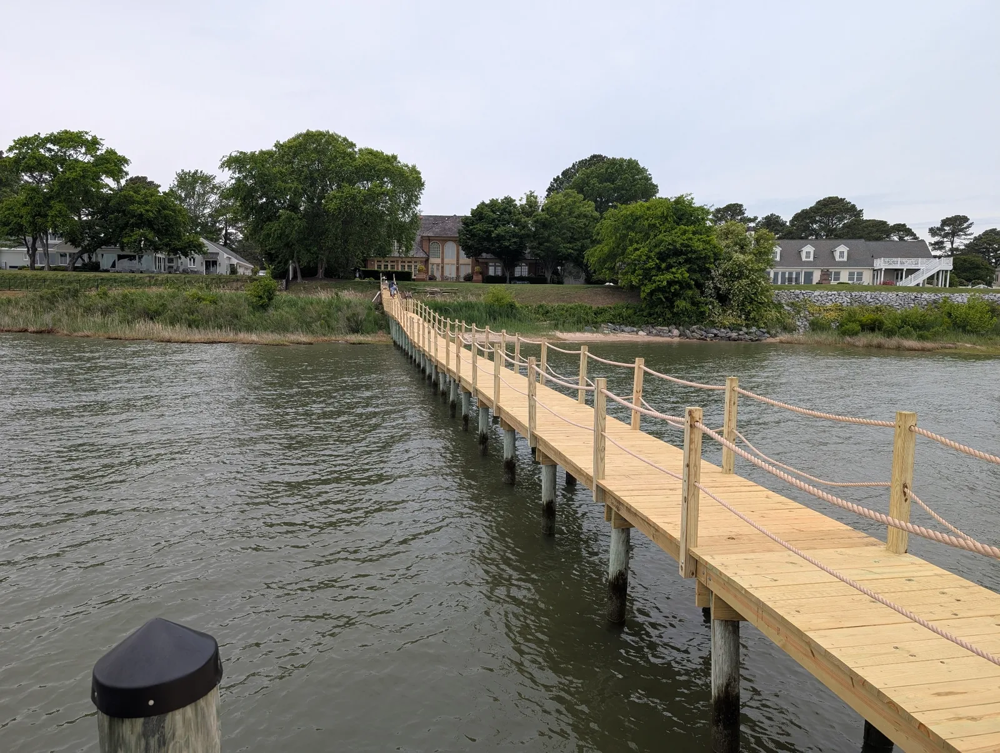
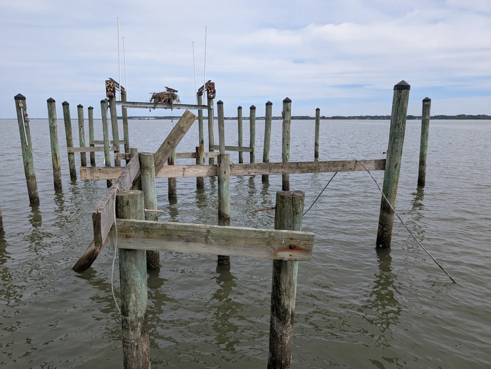
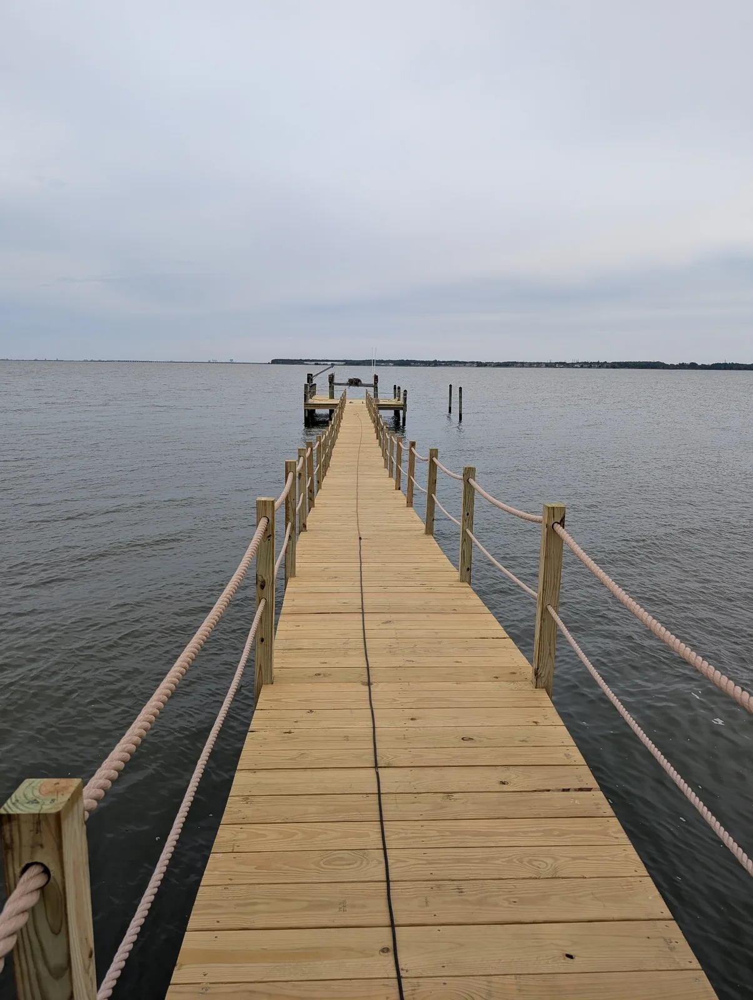
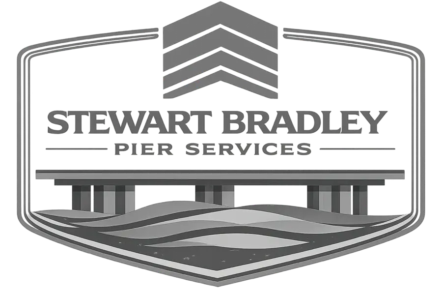

Pier Re-Decking
Replace worn decking with properly selected, installed and spaced materials suited for waterfront exposure.
Residential pier services • Hampton Roads, Virginia
Focused pier repair, re-decking and maintenance with honest recommendations, durable materials and careful craftsmanship.
Focused waterfront craftsmanship
We help Hampton Roads homeowners extend the useful life, improve the safety and restore the appearance of their piers.
Our focus is re-decking, selective board and accessible framing repairs, cleaning, staining and rope railing—not piling installation or engineered structural work. You receive a straightforward assessment of what should be repaired, what can remain and how to protect your investment.
Replace worn decking with properly selected, installed and spaced materials suited for waterfront exposure.
Target deteriorated deck boards and accessible framing when a complete rebuild is unnecessary.
Remove algae, dirt and weathering with a careful cleaning process appropriate for the surface.
Protect wood from intense sun, moisture and the demanding conditions of Hampton Roads waterways.
Add a classic waterfront railing with durable posts, clean alignment and careful finishing.
Start with an honest visual assessment and clearly defined estimate before deciding how to proceed.
Schedule an assessment →Featured transformation
This aging Hampton Roads pier received renewed framing where needed, new decking and a two-course rope railing—creating a clean, usable waterfront walkway ready to be enjoyed again.


Project scope




The Stewart Bradley standard
More than a motto, it guides the materials we recommend, the details we pay attention to and the way we communicate throughout your project.

We recommend the work your pier needs—not a larger scope simply because it can be sold.
Clean lines, sound fastening and careful finish work matter in every visible detail.
You receive a defined scope, realistic expectations and direct updates from start to finish.
We plan access carefully, maintain an orderly work area and treat your waterfront home accordingly.
A straightforward process
Tell us what you are seeing and what you want to accomplish.
We visually review accessible areas and discuss practical options.
You receive a defined scope so expectations are clear before work begins.
We complete the agreed work with attention to detail and communication.
Pier care
Sun, salt, moisture and changing tides are hard on waterfront structures. These quick guides help homeowners recognize common warning signs and make informed maintenance decisions.
Loose boards, raised fasteners, soft spots, movement and uneven framing are all reasons to schedule a closer look.
Cleaning restores appearance; a suitable finish can help slow weathering and moisture absorption.
The right choice depends on the condition of the decking, accessible framing, pilings and connections—not age alone.
Local service
Suffolk, Smithfield, Isle of Wight, Chesapeake, Portsmouth, Norfolk, Virginia Beach, Hampton, Newport News, York County, Poquoson and surrounding communities. Project availability depends on location, access and scope.
Ready to restore your pier?
Choose a convenient time for a free consultation, or send us a few details using the estimate form. We will follow up to discuss the next steps.
Schedule a Free Pier ConsultationNo obligation • Honest recommendations • Same-business-day response